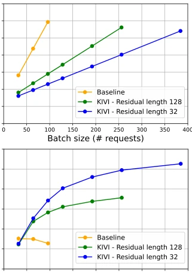

Figure 2: Magnitude of key and value cache for Llama-2-13B and Falcon-7B. We observe (1) for key cache, there are a few channels whose magnitudes are very large. (2) for value cache, there is no obvious outlier pattern.
Figure 3: The overview of KIVI algorithm. For ease of illustration, we omit the value cache and attention output parts. The detailed pseudo-code is provided in Algorithm 1. Here “Q_Matmul” is the mix-precision matrix multiplication which fuses the dequantization with matrix multiplication at the tiling level.
Figure 4: Needle-in-a-Haystack results on Llama-3-8B-Instruct and Mistral-7B-Instruct-v0.2. Here we count the number of words instead of tokens to better account for the tokenizer difference. The final token length is noted in the upper right corners of each figure. Detailed setting can be found in Appendix B.

Figure 5: Memory usage and throughput comparison be- tween 2bit KIVI and 16bit baseline. KIVI can achieve higher throughput by enabling a larger batch size.